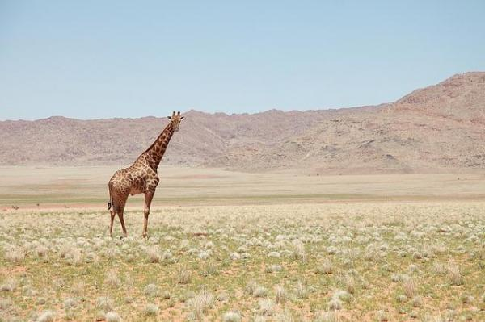
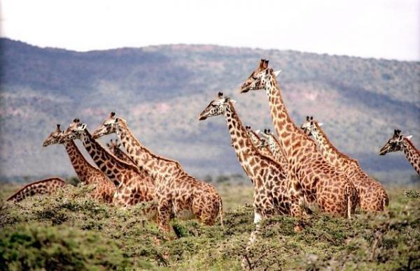

Voir une girafe en vrai est une expérience exceptionnelle et très marquante. Ce sont des animaux élégants à l'apparence unique, avec leur port noble et leur long cou. La première curiosité à mentionner est que chaque girafe possède un motif de taches unique et propre à chaque spécimen. Il fait partie de leur ADN.
Les girafes sont des animaux impressionnants qui ressemblent à un croisement étrange mais intéressant entre un chameau, un diplodocus (dinosaure à long cou) et un léopard (pour leur couleur). Ce sont des animaux herbivores et très calmes. Les girafes suscitent souvent beaucoup d'intérêt et de questions chez les personnes qui les aperçoivent pour la première fois.
Les girafes dorment peu, elles sont très calmes mais restent éveillées la majeure du temps. Elles ne dorment qu'entre 10 minutes et deux heures par jour, ce qui semble être une durée suffisante pour le bon fonctionnement de leur organisme. Elles passent la plupart de leur vie debout et font pratiquement tout dans cette position, même dormir et mettre bas. L'homme a beaucoup à apprendre du comportement des girafes. Ces animaux ne sont pas seulement calmes mais également extrêmement pacifiques. Il est très rare de les voir se battre, même lors du rituel de la parade nuptiale qui ne dure jamais plus de 2 minutes et au cours duquel les mâles enlacent leurs cous afin de séduire la femelle. Les girafes boivent également très peu d'eau. En effet, elles l'obtiennent directement des plantes et fruits dont elles se nourrissent. Elles sont capables de ne boire qu'une fois en plusieurs jours sans se déshydrater.
Comme mentionné plus haut, chaque girafe est unique. Elles possèdent toutes un modèle de taches unique qui varie en taille, forme et même couleur. Les mâles sont plus sombres que les femelles. Ce trait particulier est très utile pour les chercheurs et leur permet d'identifier chaque individu plus facilement. Les girafes sont les mammifères les plus hauts du monde. Même les girafons nouveau-nés sont plus grands que n'importe quel être humain. Ce sont de véritables athlètes qui peuvent atteindre des vitesses de 20 km/h et parcourir jusqu'à 4 m d'une seule foulée. La girafe utilise sa langue de 50 cm comme une main avec laquelle elle peut tout attraper et soutenir. Il s'agit de ce que l'on appelle une « langue préhensile ». Le même phénomène se produit avec la trompe des éléphants.

Les girafes communiquent principalement de façon non verbale.
C'est pourquoi de nombreuses personnes pensent que les girafes ne font pas de bruit, mais cette croyance est erronée.
En effet, les girafes produisent des sons semblables à ceux d'une flûte, avec des soufflements et sifflements. Elles émettent également d'autres sons avec un ton et une fréquence trop faibles pour l'oreille humaine.
Pour les experts, cet aspect des girafes reste un monde à découvrir.
Certaines religions nouvelles telles que le « New Age » considèrent la girafe comme un symbole de flexibilité et d'intuition.
Son nom scientifique, Camelopardalis, signifie « le chameau marqué comme un léopard, qui marche vite ».